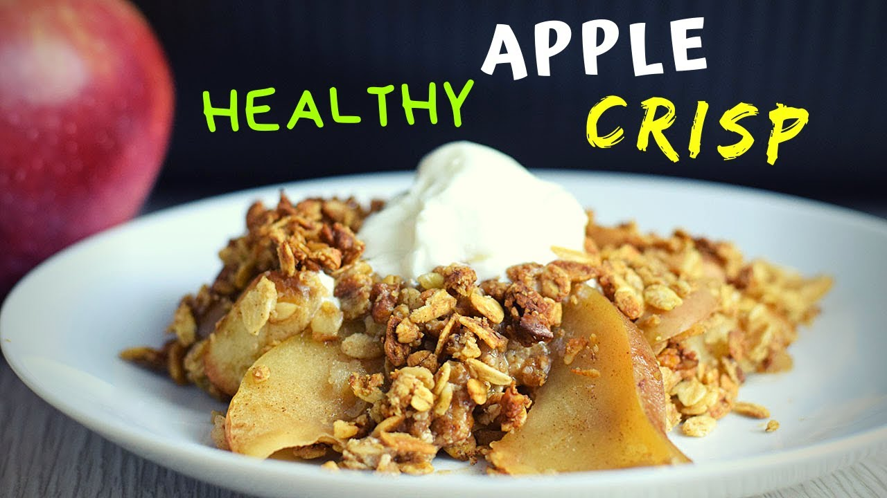

Apple Crisp (Healthy Version) by How to Cook Smarter

Description
This apple crisp recipe by How to Cook Smarter features a healthy alternative to the traditional apple crisp dessert. It's easy to make it's also gluten and dairy free while being vegan friendly. Feel free to experiment and use any apple of your choosing!
This recipe makes 6 servings, with each serving consisting of 232 calories, 9.2g of fat, 36.8g of carbs, and 3.3g of protein. Making it an excellent choice as a healthy snack.
Ingredients
Apple Filling
- 6 cups apple slices (700g)
- 1 tsp ground cinnamon
- 1 tsp vanilla extract
- 1/4 cup unsweetened applesauce (65g)
- 1 tsp cornstarch
- 1 tbsp maple syrup or agave (optional)
Topping
- 1 cup rolled oats (90g)
- 1/4 cup ground oats or oat flour (25g)
- 1/4 cup finely chopped walnuts (30g)
- 1 tsp ground cinnamon
- 2 tbsp maple syrup or agave
- 2 tbsp melted coconut oil
Steps
- Half, core and thinly slice apples and transfer to a large mixing bowl.
- Add the cinnamon, vanilla extract, applesauce, cornstarch and maple syrup (if using sweetener), and toss until apples are evenly coated.
- Transfer the apples into a baking dish, cover with foil and pre-bake at 350F (180C) for 20 minutes.
- While apples are baking, in a bowl, add the rolled oats, ground oats, finely chopped walnuts, cinnamon, maple syrup and coconut oil. Using a fork mix to combine.
- Remove the foil, using a spoon stir the apples, sprinkle the oat topping all over (but do not press down), and place back in the oven.
- Bake at 350F (180C) for another 20-25 minutes, or until the topping is golden brown.
- Let it cool down for 15 minutes, then serve with a spoonful of Greek yogurt or coconut whipped cream on top.
Enjoy!
Recipe Source
Click here for original video by How To Cook Smarter